Ecosistema Las Ñañas
Próximamente · Diciembre
En diciembre estará todo listo para que hagas tu pedido, con envíos nacionales e internacionales.
Vida rural · comunidad · territorio
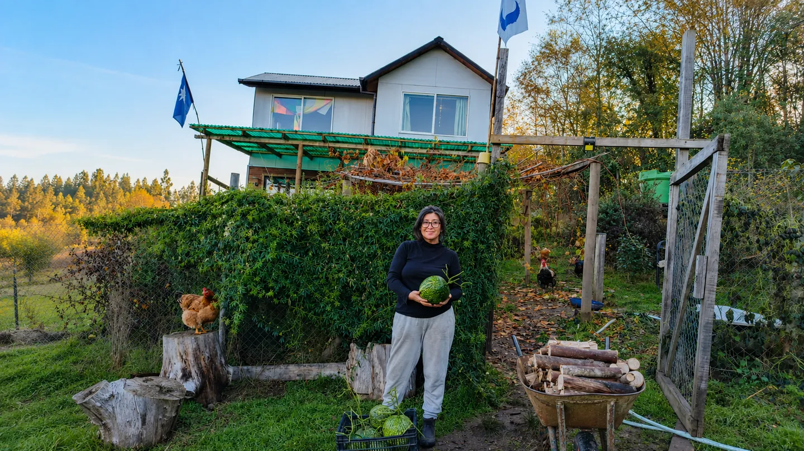
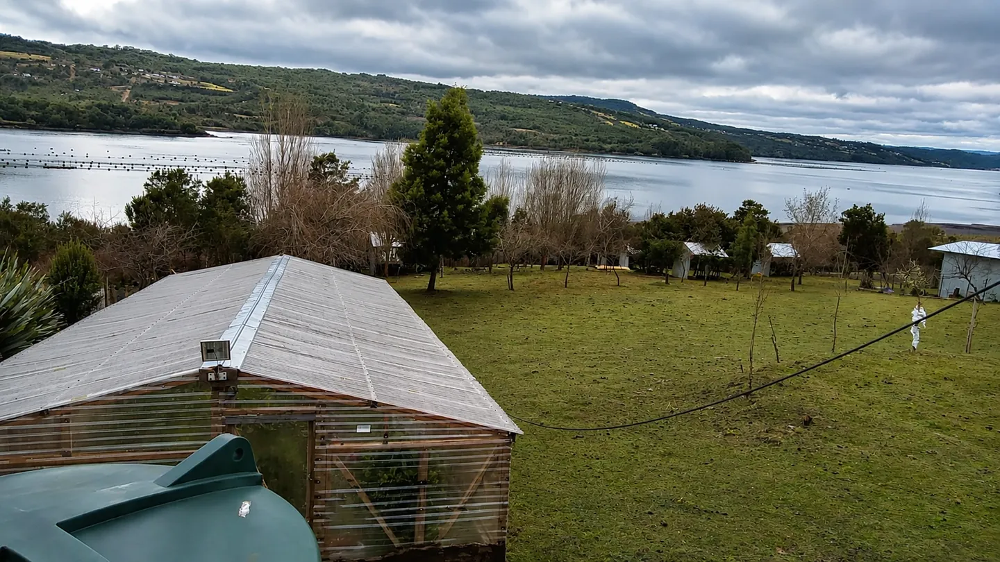
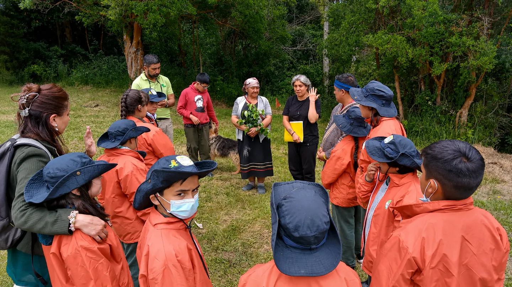
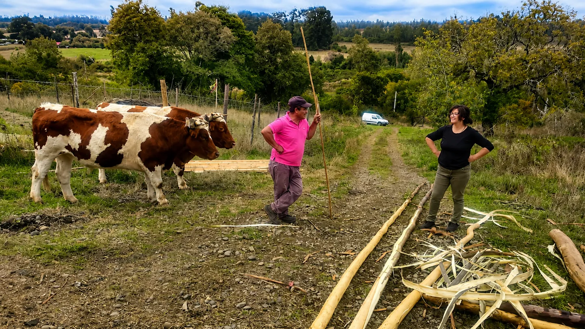
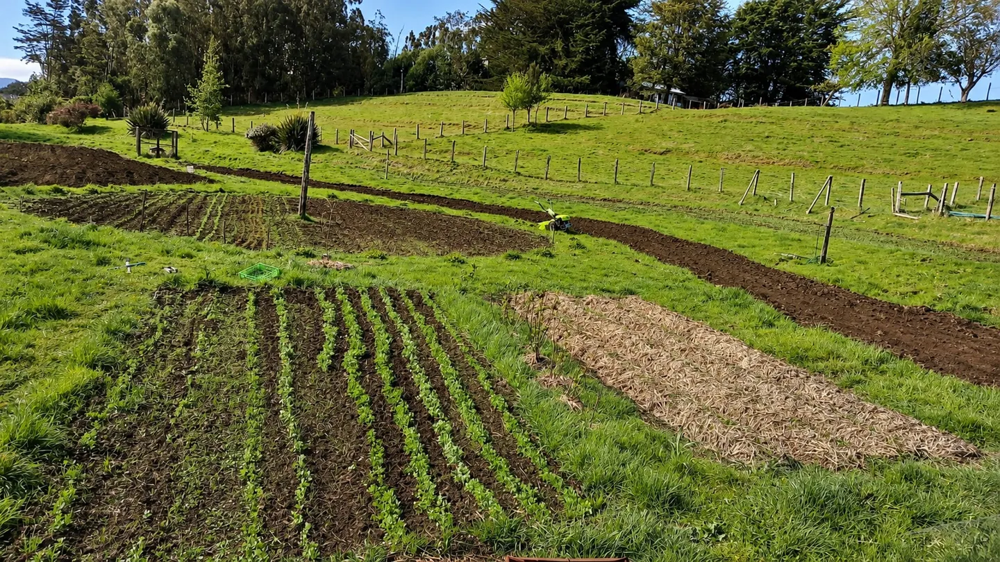
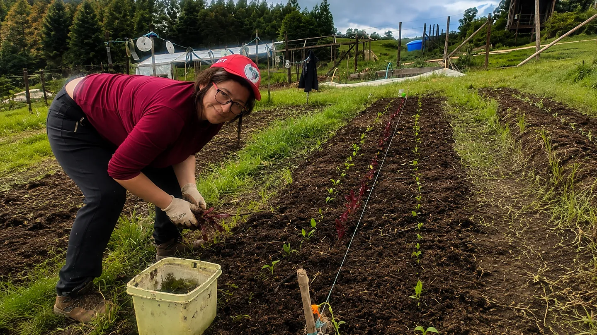
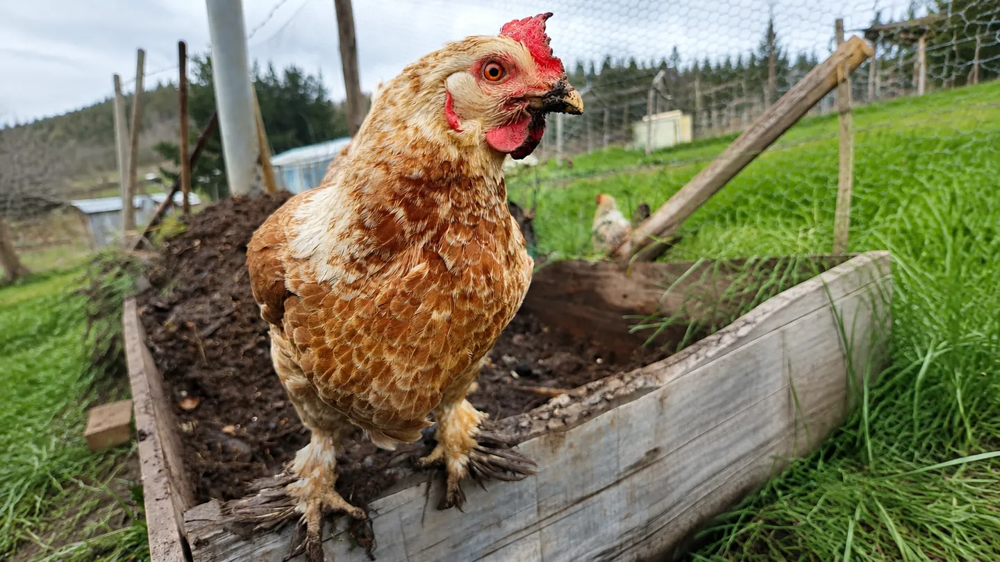
Kimün · reciprocidad
Toca cada cartilla para descubrir la escena que sostiene su relato.
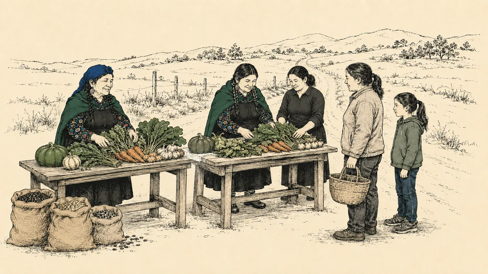
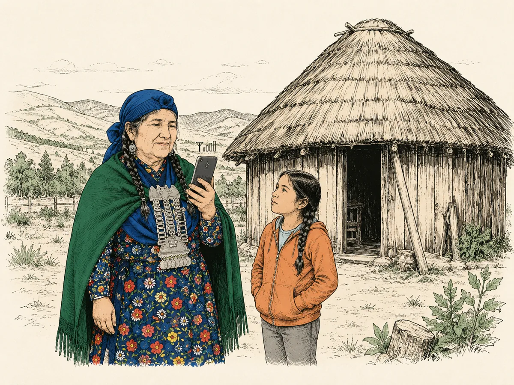
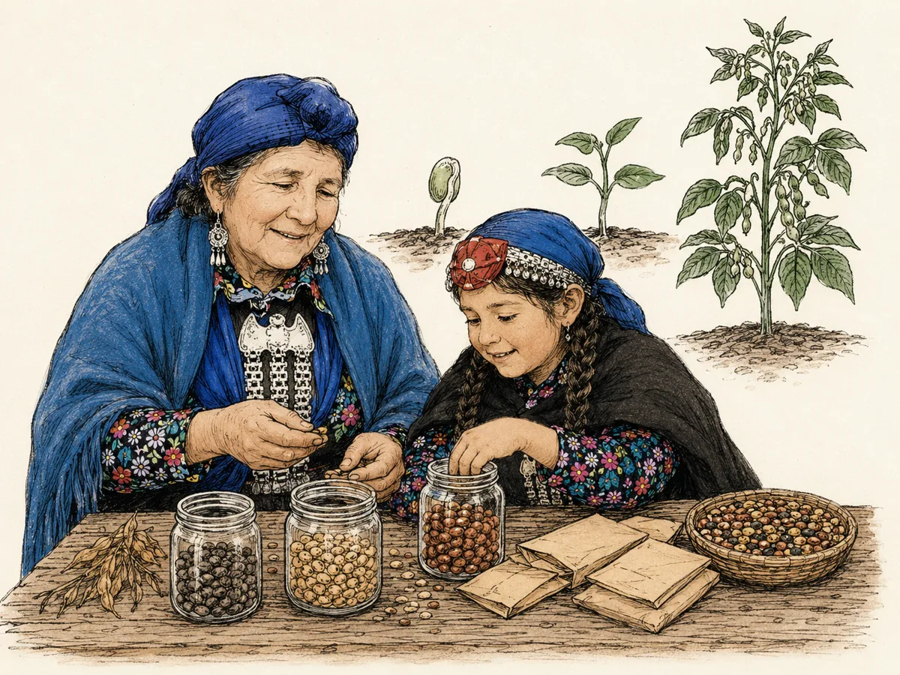
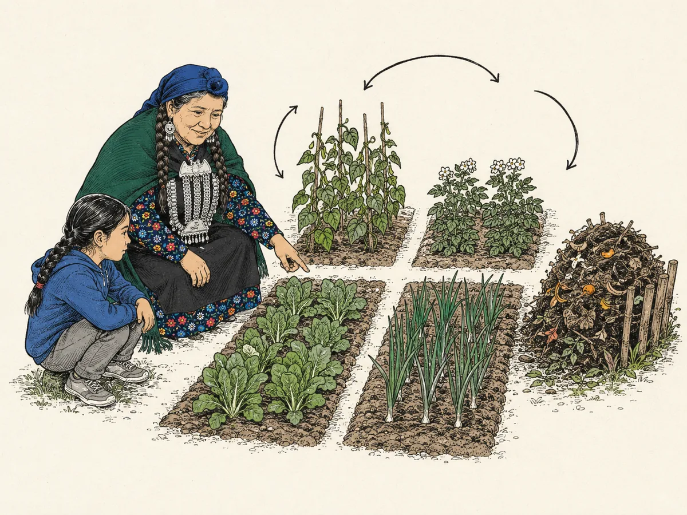
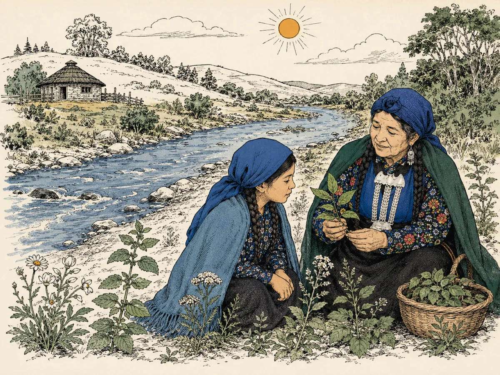
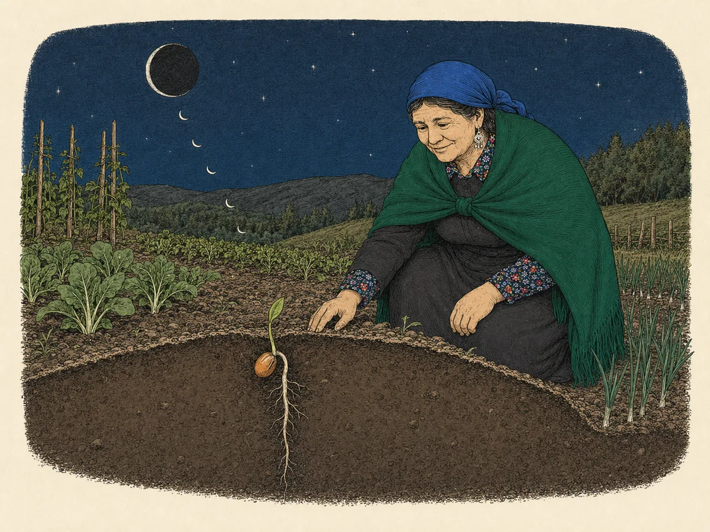
Conectemos · Ruka
¿Tienes dudas, necesitas contratar nuestros servicios , productos o vulntariado? Escríbenos directamente.
Región de La Araucanía, Chilelasñañas.cl
Registro para recibir novedades de las ñañas y te lleguen ofertas, esto no incluye ningun tipo de suscripcion.